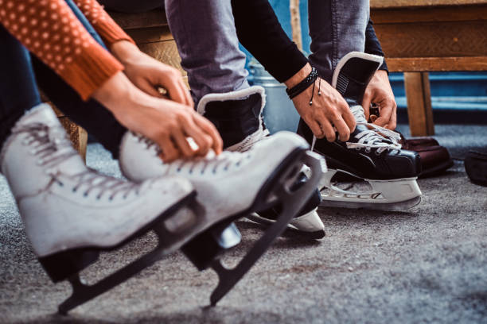

Patines
El patín para la práctica del patinaje artístico consta de una bota, similar a la utilizada en el patinaje artístico sobre ruedas y una cuchilla sujeta a la bota por tornillos. En los patines de mejor calidad las botas y cuchillas se suelen adquirir por separado; esta práctica permite el emplazamiento exacto de la cuchilla de acuerdo a la preferencia del patinador y más flexibilidad al intercambiar o reemplazar el equipo, por ejemplo, reutilizando las mismas cuchillas en un par de botas nuevas.2021
Las botas suelen ser predominantemente de cuero. Este material tiene la ventaja de amoldarse gradualmente al pie, lo cual resulta en un control más preciso de los patines. Las suelas de los patines modernos suelen incluir materiales plásticos más ligeros para disminuir el peso del patín. Es importante que las botas proporcionen suficiente sujeción lateral en los tobillos, por los cual los patines utilizados para saltos multirotacionales tienen una construcción muy rígida.21 La costumbre de usar patines blancos para las mujeres y negros para los hombres está muy extendida, aunque no obedece a ningún criterio o norma impuesta por el reglamento; es posible usar patines de otros colores y es bastante común cubrirlos parcial o totalmente con medias, pantalones o fundas de colores para adaptarlos al tema del programa o al atuendo del patinador. Hasta bien entrado el siglo XX, tanto hombres como mujeres llevaban patines oscuros, hasta que algunas patinadoras famosas, como Charlotte Oelschlagel o Sonja Henie empezaron a utilizar patines blancos e iniciaron así esta tradición.2223
Las cuchillas son de acero templado, recubiertas de una capa de cromo para protegerlas de la oxidación, excepto por la parte inferior que está en contacto con el hielo; esta parte de la cuchilla tiene un perfil cóncavo, dando lugar a dos filos muy pronunciados: interno y externo. El patinador patina sobre el filo interno o externo cuando se inclina hacia el lado interior o exterior del pie. Este diseño obedece a razones prácticas: un filo estrecho penetra más profundamente en el hielo, lo que ayuda a propulsarse al presionar contra el hielo y a ejecutar maniobras complicadas sin resbalar.n. 3 Se considera mala técnica patinar continuamente con el peso repartido sobre los dos filos. El filo se desgasta gradualmente con el uso y es necesario afilar las cuchillas regularmente, además de protegerlo con cubiertas de plástico o madera para caminar fuera de la pista.
El perfil longitudinal varía a lo largo de la cuchilla. La serreta en la parte delantera se utiliza principalmente para iniciar los saltos y piruetas; el uso de la serreta para impulsarse es un error típico de los patinadores principiantes. La parte trasera de la cuchilla es ligeramente curva, con un radio de unos 2 m. El radio de curvatura es menor en los primeros centímetros detrás de la serreta; el menor contacto con el hielo sobre esta parte de la cuchilla facilita la ejecución de piruetas.
